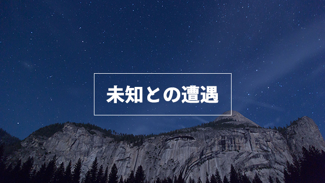

人間を大胆に二つに分けると次のようになります。
一つは「現状維持」を良しとするタイプで、もう一つは「改善（変更）」への意欲が強いタイプです。
私の独断では前者のタイプが圧倒的に多くその比率は8:2くらいと感じています。
それは現状維持が安全と信じられているからです。
逆に言うと、多くの人は変更や改革を恐れているということです。
多くの人は物事を変えることを嫌がります。
昨日と同じ今日があり、今日と同じ明日があること。いつもと変わらず日常が過ぎていくのが良い。大過なく過ごすこと、不意の出来事や予測不能の突発事はできれば避けたい。
そう思って生活しています。
脳は繰り返しのパターンを好みます。最初は苦労して獲得した方法もパターン化することで「手抜き」ができるのです。
また慣れ親しんだ思考や行動習慣を変えることは本能的に危険と感じるからです。
こうして大半の人は現状維持が安全と考えて暮らしているわけです。
しかし私は、この「現状維持が安全」という考えそのそものが実はきわめて危険（リスキー）であると思っています。
どういうことでしょうか。
理由は簡単で、現状維持、つまり「変わらないこと」など世の中にありえないからです。
「万物は流転する」という言葉がありますが、ヒトも自然も宇宙もあらゆるものは絶えず変化しています。一刻も休むことなくです。
人間社会も同様。
会社や人間関係も目に見えるか見えないかの違いはあれど、刻一刻と変化しているのです。
この世で変化しない唯一の法則は「全ては変化する」という真理です。
変化を恐れると現状維持もできない
多くの人が勘違いしている事実があります。
それは「現状維持」とは「変化しないこと」だと思いこんでいることです。
つまり、いつもと同じことを繰り返していれば現状が維持されると思っているわけです。
これはトンデモない間違いです。
全てが変化する以上、同じことの繰り返しは即劣化を意味します。それは現状を維持することさえできないということです。
ここに大きな逆説があります。
すなわち現状を維持したいのであれば、それまで以上に「改善・改革」のエネルギーを注ぎ込まねばならいということです。
現状維持を優先するあまり「新しいこと」にトライしなければそれは必ず形式主義に陥りやがて単なるパターンとなって衰退します。
これが多くの組織が行き詰まる原因です。
組織を率いるリーダーはこのことを知っているので常に「新しい風」を吹き入れ、固着しがちな集団に「変化」という刺激を与えようとします。
私も30年に渡って組織（集団）を率いた経験があるのでこのことはよく分かります。
しかしそれは言うは易し、行うは難しでした。
たとえば、ある年にうまくいった企画が次の年もうまくいくとは限らない。しかし多くのスタッフは同じことを繰り返そうとします。初めての試みは緊張もあり、エネルギーもみなぎっているので案外うまくいくことが多いのです。
ところが何年も続くと、それはおなじみのパターンとなり単調な繰り返しの作業となります。当初の意気込みや緊張感そしてそこに込められた情熱は色あせ、魂の抜けたものになり、以前ほどの成果はあげられなくなります。皮肉なことに「かつてうまくいった」という成功体験がかえって「変化への抵抗力」となり、衰退に拍車をかけます。
いったんこの「衰退」という負のスパイラルに入ると抜け出すことは難しくなります。
だから常にやり方を変えたり、もっと改善改良の余地はないかと工夫したり、あるいはまったく新しい試みはできないか考え続けることが必要なのです。
つまり未知なるものへの挑戦です。
しかし新しい試み、未知への挑戦はたいてい凄まじい抵抗にあうのが常でした。多くの人はそれほど「変化」を恐れているのです。
まるで「変化するくらいならこの泥船とともにに沈んだほうがマシだ」と言わんがばかりにです。
でも「変化したくない」「現状を維持したい」という思いは、自然法則（無常）に反するが故に必然的に衰退の運命を免れ得ないことになります。
自分を刷新すれば世界は変わる
さて、このことは個人の生き方そのものにもあてはまります。
私たちは成長とともに自分固有の「お決まりのパターン」、すなわち独自の生活様式を繰り返しがちです。
仕事のやり方でも、人間関係でも、知らず知らずのうちに特定の行動や思考習慣に染め上げられています。
「慣れたやり方の方が楽でいい」「変化がないのは退屈だけどこの方が安全だから」
こうして多くの人が無意識のうちに「現状維持」の衰退パターンに陥っていきます。
意欲やエネルギーは衰え人生から活力や喜びは失われていきます。
仕事や人間関係でも同じような失敗が続いたりします。
「なんだか最近うまくいかないことが多い気がする」「自分が以前とあまり変わらず成長していないようだ」
こういう状態にあるなら、自分の思考や行動が繰り返しのパターンに陥っていないかどうか点検する必要があります。
毎日同じことをしていて新しい展開が拓けるはずがない
このことに気づいたなら「新しい習慣」に切り替えるべき時が来たのかもしれません。
私としてはこういうときこそ「人生の転換期」が来たと考えて、思い切って自分の中の古いパターンを変えてみることをオススメします。
変えるのが怖いという理由だけで発展性のない人間関係に執着していたり、すでに必要のない仕事のやり方を踏襲し続けたりしていないか。
今までやっていたからということだけで意味なく続けていることはないか点検してみることです。
なんならいったんリセットして全てをやり直すくらいのつもりでも構いません。
「命綱なしで断崖から飛び降りろというのか！」
という恐怖はあるかもしれませんが、それだけの価値はあります。
もちろん最初は小さなことから始めてよいのです。いきなり会社を辞めろとか、交遊関係を断ち切れなどと言っているのではありません。
通勤の道順をいつもと変えてみる。一つ早めの電車に乗る。新しい趣味やサークルに加入する。そのようなことでよいのです。
それまでの決まりきったパターンを少しずつ崩し新しい行動や新しいものの見方を採用してみるといった感じです。
周りを変えるのではなく自分の中から変えていく。自分を刷新するといった感覚です。
やがて不思議なことが起こります。
職場での人間関係が好転する。新しい企画が持ち込まれる。思ってもいなかった幸運が舞い込む。
気がついたらセピア色に染まっていた周囲の景色が色鮮やかに再び蘇るのです。
必要なことは「未知なる領域」に強い好奇心を抱くことです。そして新しい習慣を作り上げることです。
そうすれば生き生きとした人生をもう一度始めることができる。自分の新たな可能性を生きることができるのです。
人生に退屈を感じたり行き詰まっているのならぜひやってみて下さい。